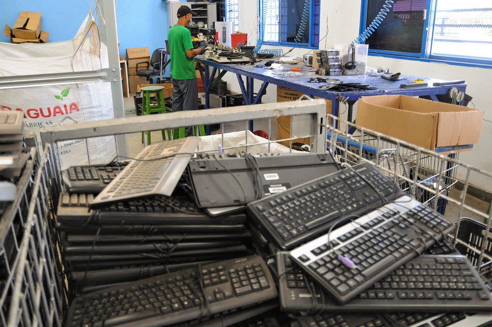
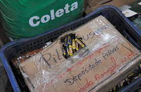
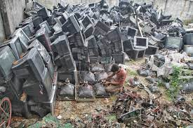

Sobre
E-lixo, resíduos de equipamento eletroeletrônico (REEE) ou lixo eletrônico. Todos esses termos se referem à mesma coisa: produtos elétricos e eletrônicos quebrados, danificados ou sem utilidade por algum motivo e pilhas descarregadas que devem ser descartados. Na maioria das vezes esses produtos são jogados no lixo comum ou ficam esquecidos em alguma parte da casa, porém eles podem ser reciclados, ou seja, podem ser transformados em outras matérias-primas em vez de ser colocados em aterros sanitários. Geralmente, os componentes dos aparelhos elétricos e eletrônicos são feitos de plástico, vidro, metais, entre outros materiais. No processo de reciclagem, os equipamentos descartados pela população são desmontados e as partes transformadas em matéria-prima para a indústria. Uma das vantagens do processo de reutilização é que diminui-se a extração desses elementos da natureza, economizando recursos. O processo de extração de matéria-prima a partir de eletroeletrônicos sem uso é chamado de mineração urbana.
Algumas categorias são utilizadas para delimitar os tipos de lixo eletrônico. Essa divisão é feita porque os equipamentos têm configurações de tamanho, manuseio e aplicação diferentes. As categorias são: Grandes equipamentos: geladeiras, freezers, máquinas de lavar, fogões, ar condicionados, microondas, grandes TVs, etc. Pequenos equipamentos e eletroportáteis: torradeiras, batedeiras, aspiradores de pó, ventiladores, mixers, secadores de cabelo, ferramentas elétricas, calculadoras, câmeras digitais, rádios, etc. Equipamentos de informática e telefonia: computadores, tablets, notebooks, celulares, impressoras, monitores e outros. Pilhas e baterias portáteis: pilhas modelos AA, AAA, C/D, recarregáveis, baterias portáteis de 9 V, etc.
Você pode estar se perguntando sobre o que fazer com os aparelhos eletroeletrônicos ou pilhas que você mantém em alguma parte da sua casa, escondidos, sem saber muito bem o que fazer com eles. Saiba que existem dois caminhos por meio dos quais a população consegue descartá-los com responsabilidade.
Impactos
Quando descartado na natureza, metais pesados como mercúrio, chumbo, cádmio e níquel, que fazem parte da composição de alguns produtos elétricos e eletrônicos, podem entrar em contato com o solo, penetrando-o até poluir lençóis freáticos e, consequentemente, a água que consumimos.
Além disso, resíduos eletrônicos depositados em aterros lotam ainda mais esses locais uma vez que metais, plástico e vidro demoram muito para se decompor e diminuem a sua vida útil.
Reciclagem
Um desses é a devolução ao fabricante. Muitas marcas mantém pontos de recebimento destes aparelhos, em que seus produtos já sem uso podem ser depositados, com a garantia de que serão encaminhados para um sistema de logística reversa. Outro caminho a seguir é depositar em pontos de descarte instalados por gestoras da logística reversa de eletroeletrônicos que, atualmente, tem representado grande parte das marcas fabricantes e importadoras de produtos eletroeletrônicos e farão todo o trabalho de transporte, manejo e reciclagem dos resíduos.
Grandes redes varejistas como a Via Varejo, companhia responsável pelas operações das redes Casas Bahia e Ponto Frio, são parceiras da Green Eletron e se comprometeram com a instalação de PEVs em suas lojas. A parceria com a Via começou em dezembro de 2019, com 32 PEVs instalados em lojas da rede no estado de São Paulo, depois expandindo-se para 469 pontos em 18 estados e no DF.
- – Leroy Merlin
- – Carrefour
- – Telhanorte e Tumelero
- – Shopping Riomar Recife
- – Coop Cooperativa de Consumo
A reciclagem de lixo eletrônico desmonta os aparelhos após seu recebimento e classifica cada material encontrado, como plástico, placas de circuitos, vidros, metais, metais pesados, elementos químicos e outros. Com isso, cada um tem uma destinação correta para que não afete o meio ambiente